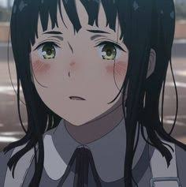
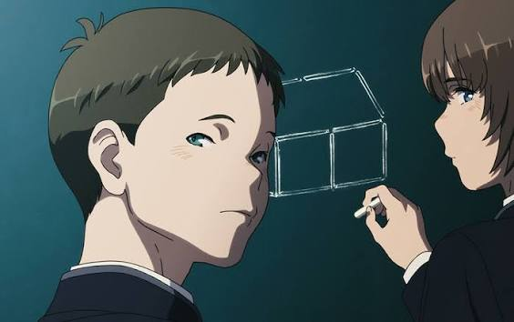

Introdução
Mifuse é uma cidade siderúrgica no interior do Japão. Em janeiro de 1991, uma explosão catastrófica na usina isola a cidade do mundo exterior, aprisionando-a em um inverno eterno. Mamoru Sagami, um operário da usina e sacerdote-chefe, declara o desastre um castigo divino por terem explorado uma montanha sagrada. Ele convence os moradores a manterem suas identidades pré-desastre, apresentando documentos de identificação periodicamente, alegando que estão ligados a uma "máquina sagrada". Enquanto isso, fendas se abrem ocasionalmente no céu, apenas para serem seladas pela fumaça da usina.
Masamune Kikuiri, um estudante, descobre uma garota selvagem, a quem ele chama de Itsumi, no alto-forno de uma siderúrgica, sob os cuidados de sua colega de classe, Mutsumi. Ao criar laços com Itsumi, Masamune aprende teorias conflitantes sobre suas origens: Sagami afirma que ela é uma "mulher dos deuses", enquanto seu tio Tokimune insinua que ela não pertence àquele mundo. Conforme Masamune continua visitando Itsumi, a natureza surreal da cidade se torna cada vez mais evidente.
Staff & Cast
- Diretora e Roteirista: Mari Okada
- Diretor Assistente:Tadashi Hiramatsu
- Design de personagens: Yuriko Ishii
- Diretor Chefe da Unidade: Seimei Kidokoro
- Masamune Kikuiri：Junya Enoki
- Mutsumi Sagami：Reina Ueda
- Itsumi ：Misaki Kuno
Personagens
Principais

Masamune

Mutsumi

Itsumi
Secundários

Akimune

Tokimune

Atsushi

Hina

Mamoru

Reina

Sonobe

Yasunari